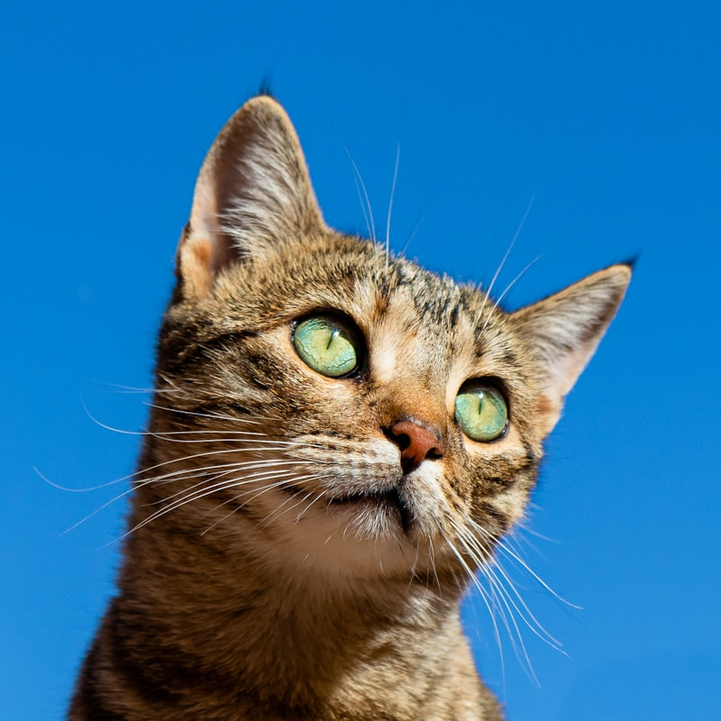
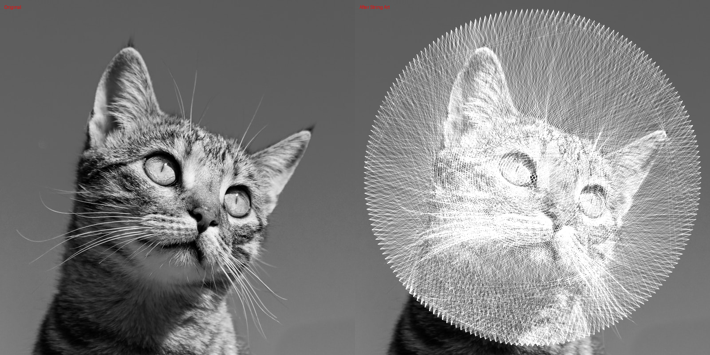

🎨 String Art Generator
Convert images to string art sequences with precision SVG output
🚀 Version 3.1.0 - Go + Research Improvements: Opacity, Adaptive Stopping, Look-Ahead!
📐 Technical Specifications
- Output Format: SVG (Scalable Vector Graphics)
- Canvas Size: 600mm × 600mm
- Stroke Width: 0.18mm (full opaque)
- Algorithm: Greedy line selection
- Pin Arrangement: Circular (200 pins default)
- Max Lines: 3000 strings
Example: Cat Portrait (v3.1.0 - Go with Research Improvements)
Generated with Go v3.1.0 - includes research-based improvements from self-learning system:
• Adaptive stopping for quality plateau detection
• Progress tracking with real-time score reporting
• Optional features: opacity, look-ahead, random sampling
Generation time: 2.2 seconds (66x faster than Python, same quality).

Original Image
Source photograph

PNG Preview (v3.1 - Go)
2000 lines, 2.2 seconds
SVG Output v3.1 (Zoomable)
With adaptive stopping

Comparison (v2.0)
Original vs String Art Result
📥 View & Download
Interactive SVG viewer with infinite zoom or download for physical construction
🔍 Open SVG Viewer (Full Screen) 📥 Download SVG v3.1 Go (600mm × 600mm){kind=link}
🎯 How It Works (v2.0.0)
- Preprocessing: Detect edges using Sobel gradient to identify important features
- Setup: Place N pins evenly around a circle
- Feature-Aware Selection: At each step, try all valid next pins and select the one that best matches BOTH darkness AND edge strength
- Draw: Draw that line (lighten pixels along the path)
- Repeat: Continue until max lines reached or no improvement possible
- Export: Generate SVG with precise measurements for physical construction
🚀 New in v3.1.0: Ported research improvements from self-learning system to Go:
• Adaptive stopping (--adaptive-stop) detects quality plateau and stops early
• Progress tracking with real-time score reporting every 100 lines
• Optional: Non-opaque strings (--opacity 0.3-0.7) for subtle shading effects
• Optional: Look-ahead (--look-ahead) evaluates future moves for better paths
• Optional: Random sampling (--random-sampling) trades exhaustive search for speed
All improvements maintain 66x speed advantage over Python!